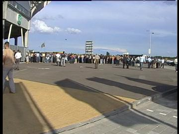
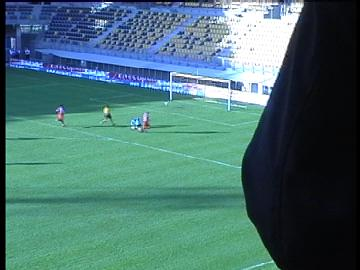

|
Roda JC - Alemannia Aachen (2-2) 3 augustus 2002 |

De belangstelling voor deze oefenwedstrijd is groot. Vijf
minuten voor aanvang staan er nog lange rijen
voor de kassa's.
Al na 3 minuten scoort Anastasiou 1-0.
Deze MartinAir-kleuters zijn noch in voetbal noch in
dienstverlening geïnteresseerd en willen
eerst een gesprek
afronden alvorens een bestelling op te nemen.
Eric van der Luer is voor EEN seizoen in dienst bij de
tegenstander van vanavond. Hij mocht 3/4 van de match
spelen en deed dat solide met zijn welbekende fluwelen
passes en hoekschoppen.
De zuidtribune is vol. Oost is dicht, noord is zeer
zwak bezet
terwijl west bijna 2/3 vol is.
In de 21e minuut kopt Christiano 2-0 binnen.
Na zeer veel kansen verprutst te hebben scoort Aachen
vlak
voor tijd een doelpunt middels Ivanovic.

Na een groot aantal wissels verzwakt Roda enorm.
Aachen
wordt zodoende de sterkere ploeg. In de 71e
min. scoort
Spizak de gelijkmaker.
Het zangkoor van Aachen.
Na afloop van de wedstrijd is er een "feestavond"
van het FP in
het home. Iedereen was welkom, zo ook de
Hanenbretboys
die kennelijk in Latino-sferen verkeren.
"Ozzy" van Volsj en de vaste klanten van Helje dörp.
Harde tech-muziek gelardeerd met voetballiedjes
krijgen de
sjaals van Roda en Aachen de lucht in.
De drie Ramona's.
Vanavond reeds werd er een bezoeker getraceerd met
de
ultra-blitze mijnwerkers-pin.
Er werd ook nog een bezoekje gebracht aan de west-tribune
(foto: Carol).
©
Koempels
Pleasure Dome